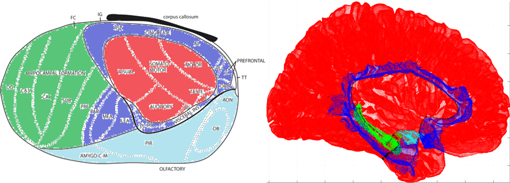

HippUnfold
HippUnfold is a software application for hippocampal segmentation and surface fitting. It leverages prior knowledge about hippocampal shape and ontogeny to provide accurate and reliable measurements of hippocampal volume and shape.
HippoMaps

HippoMaps is a Python toolbox for analyzing hippocmapal surface data. This includes mapping various types of volumetric image or scattered data onto hippocampal surfaces, custom visualization, surface manipulation, and many other useful tidbits.
HippoNet
HippoMaps is a sandbox for building memory-augmented and hippocampus-like neural networks. Currently the only test environment is AtariSpace - a 1D wheel of atari games which can be cylced, watched, or played by a curious network.
sWM
sWM examines superficial white matter of the brain by generating surfaces at multiple depths between the cortex and subcortex.
OldCortex
OldCortex is a software application designed to visualize the topology of the human cerebral cortex from its initial emegence in mammals to the modern-day human organization.
TemporalPolarMap

TemporalPolarMap is a MATLAB toolbox for flatmapping the human anterior temporal lobe (or temporal pole).
z-brains
z-brains is made in collaboration with the MICA lab to provide intuitive and minimalistic of MRI abnormalities in epilepsy patients for use by clinicians. See also BrainScores.
micapipe
micapipe is made in collaboration with the MICA lab for preprocessing and extracting features from functional, diffusion-weighted, and structural MRI.